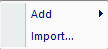

2 Quick Start
This section is intended for quick reference on the steps required to initiate a new Prometheus project through to the outputs. This section assumes you already have properly formatted input data.
2.1 Initial Set-up
This section covers the basic creation of a Prometheus project.
- Open Prometheus.
- Select either the
Newbutton orFile -> New... - The New Project Wizard will open a dialogue box with various options. The
National defaultis already pre-loaded for the Fuel Types. - Click the
Next >button. - This page will display options to input a
Fuel Type Fileand an optionalElevation File. SelectBrowse ...and navigate to the location of your Fuel type file (and Elevation, if desired).- Note: format must be either ASCII (.asc), GeoTIFF (.tif, .tiff), or text (.txt).
- Note:
NoDatamust be set to-9999in the Fuel type file otherwise Prometheus will not load the fuel file.
- Click the
Finishbutton and Prometheus will load in the data and initiate a new project. - At this point, you should visually see the chosen Fuel Type layer displayed in Prometheus’ map view.
- A
Componentswindow should be visible with a series ofFoldericons .- Expand the Fuel Types folder to see the Fuel Types included in your layer and the associated colour mapping.
- Save your project at this step, using either the
Savebutton,File -> Save As.., or keyboard commandCtrl + S
2.2 Weather & Ignition Data
This section covers the creation of a weather station, adding a weather stream, importing an ignition file, and manually drawing an ignition.
- Under the
Componentstab, right-click theWeather Stationsfolder and click theAdd ...option.- A dialogue box will open.
- Name your
Weather Station. - Select your units under the
Locationsection for the coordinates of your weather station.- Input your coordinates. Be sure to maintain the degree symbol (°1) and/or the backtick (’)
- If you have input an
Elevationgrid and yourWeather Stationis located on the grid, theElevationoption will automatically calculate.- If your station is not on the grid or you did not provide an
Elevationgrid, the user can input the station elevation directly.
- If your station is not on the grid or you did not provide an
- Select a display symbol, colour, and size if desired. Default is a size 3, blue circle.
- Enter comments if desired. Otherwise, click the
OKbutton to create the station.
- Save the project at this step.
- In the
Componentsmenu, expand theWeather Stationsfolder. The created station should be present here. Right-click the station and select theAdd Weather Stream...option.- A dialogue box will open, the top will display some title based on your weather station such as
Weather Stream -Station. - Enter a name for the
Weather Stream, such asPine Station - RDPS - June 13-18-2020to reflect the date, source of weather stream, and associated station. - Enter the
Starting Codesobtained fromDaily FWIin the relevant fields. The default in Prometheus will beFFMC = 85,DMC = 6, andDC = 15. These would reflect standard station-start up codes at the beginning of a season and must be adjusted to reflect your data.- If you do not have a formatted weather file with the correct fields, then set the correct
Start Datein the upper right corner at this time. - If you have a formatted weather file, you can leave the
Start Datealone as this will automatically adjust to your weather file datestamp.
- If you do not have a formatted weather file with the correct fields, then set the correct
- Select your preferred method for
Hourly FFMC Calculation. - Three primary options exist to create or import a weather stream at this stage.
Import Weather...- Two options are possible here,
From file...andFrom ensemble... - The
From file...option is the only option that functions properly at present. It is unlikely this will change given Prometheus is end of life. - Select the
From file...option and navigate to your Prometheus weather file2 (See the Formatting section for further details if required).
- Two options are possible here,
Add...enables the user to manually enter weather data to create either aDailyorHourlyweather stream directly.Dailyoption:Days to applythis is how many days will be applied to create the weather stream based on the chosen input data. You can create either multiple days at once using the same Min/Max data or individually create days one (or more) at a time by repeatedly using theAdd... Dailyoption.- Depending on how you’ve been provided your weather data, this may be the easiest option.
Hourlyoption: You can manually input hour by hour weather to create an hourly weather stream through this option.
- Once you have created or imported your weather stream, you can view it in the
Weather Conditionstable that is displayed in theWeather Streamdialogue box. ClickOKonce weather is properly added.
- A dialogue box will open, the top will display some title based on your weather station such as
- Ignition Data Import and Creation
- Under the
Componentstab, right-click theIgnitionsfolder 
Addenables the user to manually draw either a point, line, or polygon ignition directly in Prometheus.Import...allows the user to add an ignition file directly to the project that has been obtained / created elsewhere.- If
Addis used, select your desired ignition type:Pointignition will start your fire growth from a specific point (or points) on the landscape.- To add the
Pointleft-click on a location in the map window and a red dot will appear. - You can add as many or as few points as desired throughout the grid.
- Double left-click to finalize the points. A dialogue box will open.
- Name the ignition and set a start-time. Be specific with the start-time as this is a necessary component in conjunction with your weather stream.
- To add the
Lineignition will start your fire growth along the drawn line(s).- To add the
Lineignition, left-click on an area of the map and then move your cursor to where you want the line segment to end. Either double left-click to finalize this line ignition or single left-click to start a new segment line. - A dialogue box will open. Name the ignition and mind the start-time.
- To add the
Polygonignition will start your fire growth along the exterior of the drawn polygon.- Similar to the
Lineignition above but you will need to finalize the connection of your last segment to the starting segment to create the polygon. - Name the ignition and mind the start-time.
- Similar to the
- Under the
- Save your project.
2.3 Scenario Set-up
This section covers setting up a Scenario from which to produce a fire growth model output.
- Under the
Componentsmenu, select theScenariosfolder. An initial scenario will already exist in most cases. Either edit this or create a new scenario. - A
Scenariodialogue box will open with multiple tabs and windows within it.Scenario Inputsis the main tab.- Set the
Start Time:andEnd Time:for your scenario. These should reflect the correct dates and times you wish to simulate, i.e.June 1, 2020 11:00toJune 6, 2020 22:00 - In the
Ignitionswindow, use the check box to select the ignitions you wish to model. You can add more than one. - If you have added
Fuel Breaksyou can activate those here. - If you have added
Grid and Patchesyou can activate those here at your discretion. - Select your
Weather Stream. We will return to this.
- Set the
Burning Conditionstab offers the user the ability to set under what conditions a fire can grow in the model.- The amount of rows will correspond to the total number of days you added in the above
Start Time:andEnd Time:options (in our example, there would be six rows) Start Timeunder theBurning Conditionstab refers to the time at which a fire is enabled to spread on a given day.End Timeunder theBurning Conditionstab refers to the latest time at which a fire is enabled to spread on a given day.HISI >allows a user to define a threshold forInitial Spread Indexat which a fire will begin spreading.- For example,
HISI >set to a value of 5 means that a fire will not grow under any circumstances where the Hourly Initial Spread Index (HISI) is below 5.
- For example,
HFWI >allows a user to define a threshold forFire Weather Indexat which a fire will begin spreading.- For example,
HFWI >set to a value of 15 means that a fire will not grow under any circumstances where the Hourly Initial Spread Index (HFWI) is below 15.
- For example,
WS >allows a user to define a threshold forWind Speedat which a fire will begin spreading.- For example,
WS >set to a value of 10 means that a fire will not grow under any circumstance when theWind Speedis less than 10km/hr.
- For example,
RH <allows a user to define a threshold forRelative Humidity, at which a fire will begin spreading.- For example,
RH <set to a value of 60 means that a fire will not grow unless theRelative Humidityis lower than 60.
- For example,
- The amount of rows will correspond to the total number of days you added in the above
Fire Weathertab offers the user the option to interpolateFire Weatherspatially. Three options exist. If you enableFire Weather Interpolationyou will need to return toScenario Inputstab and identify a primary weather stream.Fire Behaviourtab provides several options to refine various fire behaviour aspects.FMC (%) override:this adjusts the Foliar Moisture Content threshold.Terrain effecttells Prometheus to consider topography provided for wind.Breachingenables fire to breachFuel Breaksif enabled and a fuel break is provided.Spottingdoes nothing and should not be available to enable/disable.Percentile rate of spread:???Green-upallows the user to set theStart Date:andEnd Dateperiods for where the model should use theGreenfuel type models.Standing Grassallows the user to set theStart DateandEnd Datefor where the model should useStandingversusMattedgrass models.Grass Curingsection allows a user to set theDegree of Curing (%)across the grid. It further enables the user to dynamically set dates for curing over time.
Propagationtab provides several additional options that affect model performance and outputs.Display intervalwill default to01:00:00but this can be adjusted at the user discretion. an interval of01:00:00will display fire growth every hour. Can be lowered or increased depending on desire.Maximum time step during acceleration:defaults to00:02:00which is a two-minute interval time step. This is rarely needed to be adjusted.Stop fire spread at data boundarywill stop your fire from “spreading” beyond the extent of the fuel data.Purge non-displayable time steps???Fire may grow with independent time stepsuseful for when you have multiple ignitions in one scenario.
- Once all settings are set and verified, click
OK. - Save your project.
- You are now ready to
Runthe model!